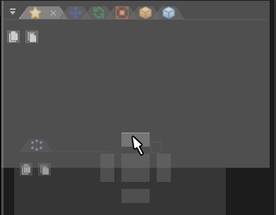

08. 通过设置生成方法排列粒子!¶
概要¶
在本章中, 你将通过修改生成方法来改变粒子的排布。 在生成方法中，你可以设置粒子的初始分布方式。 你可以通过节点父子关系来达到同样的效果，但改变生成方法将更简单。
本章中创建的第一个效果
本章中创建的第二个效果
本章中创建的第三个效果
生成方法概览¶
在Effekseer中，你可以设置生成方法。 在生成方法中，你可以设置粒子的初始分布方式。 例如，你可以让粒子排列成一个圆环或球面。

生成方法
你不仅可以设置粒子的生成位置，还可以旋转其坐标系。 例如，让粒子的y轴负方向指向球心，而非空间中的下方。

影响生成角度 - 未勾选 |

影响生成角度 - 勾选 |
你可以通过下面的链接下载为本章内容预制的特效素材。
圆形效果¶
在这一部分，你需要将粒子排布到一个圆周上。 粒子按顺时针的顺序依次呈现。
你可以利用父子关系来实现这样的效果，但多少有些麻烦。 你可以使用生成方法来更简单地实现复杂的粒子生成。
请打开 effect01.efkefc。
在默认设置下“生成方法”窗口是隐藏的。 你需要在左上角菜单栏选择“窗口 -> 生成方法”。 这之后，生成方法悬浮窗应当会出现在你的屏幕上。

生成方法
你可以通过拖动窗口的菜单栏来移动它。
你也可以通过将窗口拖动到出现的半透明方块处来将其添加到任意一个面板中。
你还可以通过拖动将窗口添加为面板的一个新的选项卡。 (If you have a single panel of tab, drag & drop them onto the tab.)

在“生成方法”窗口, 选择“圆形”作为生成方法， 在半径处输入4。
可以看到，粒子现在以圆形排列。
粒子随机生成在圆上
粒子现在随机生成在圆上，而不是按顺序出现。
将 生成模式 从 随机 修改为 顺时针 来使其按顺序生成。
除此之外, 将 顶点数 和 生成数量(译者注：基础设置选项卡) 修改为 12。
这表示12个粒子将按顺序均匀分布在圆周上。
你可以看到粒子平均地分布在一个圆周上， 并且粒子在随时间依次生成。
制作完成的特效
球面效果¶
在这一部分，我们将让粒子生成在一个球面上。
请打开 effect02.efkefc。
类似于圆，你可以让粒子排列在球面上。
在“生成方法”窗口中，将生成方法修改为“球”。
在半径处输入4。
此外, 为了让粒子在整个球面上生成, 在 X轴旋转 和 Y轴旋转 的振幅处输入360。
可以看到粒子现在在整个球面上生成了。

创建的效果
设置角度¶
尝试让球面上生成的粒子向外运动。
请打开 effect03.efkefc。
播放特效，可以看到粒子在球面上生成后，均向上运动。
向上运动的粒子
但事实上，当粒子在球面上生成时，我们往往希望它能够向外爆发或向内汇聚。
这种情况, 请勾选 影响生成角度。
当这一项被勾选时，粒子的坐标系在其生成时将被旋转，y轴负方向将指向球心。
这样，设置为向上运动的粒子，其运动将变为向球面外运动。
设置完成后，你应当可以看到粒子在向球面外运动了。
创建的效果
最后，你可以通过下面的链接下载本章中制作的效果。
总结¶
本章节中, 你通过改变粒子的生成方法改变了粒子的排布。 在下一章节，你将综合运用至今所学的知识来创建粒子效果。